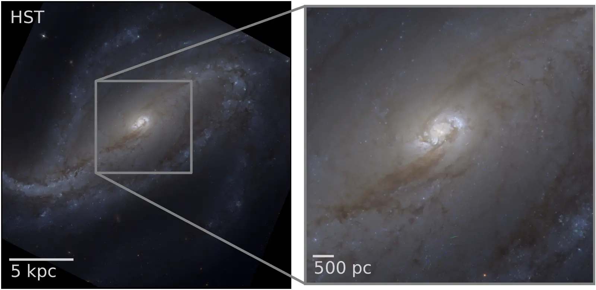
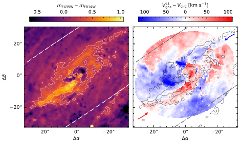
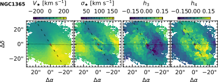
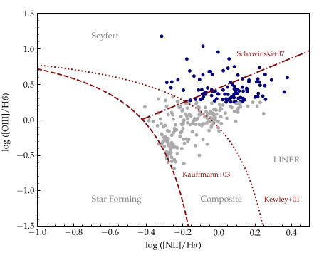
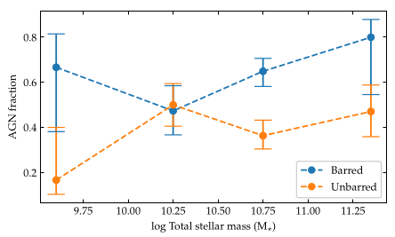

Galaxy evolution
Rapidly evolving galactic centres
A case study of NGC 613, a barred galaxy observed with MUSE as part of the TIMER project.
Galaxy kinematics, gas flows, star formation and nuclear activity.
National Laboratory for Astrophysics (LNA), part of Brazil's Ministry of Science, Technology and Innovation (MCTI).
I work primarily with integral-field spectroscopy of galaxies. I have extensive experience with large IFS datasets, particularly from MUSE, as well as survey data from SDSS. My work combines stellar population analysis, including kinematics and the recovery of star formation histories, with detailed studies of the ionised interstellar medium.
I am a member of the GECKOS survey, where I contribute to the nGIST pipeline and co-lead a research project with Dimitri Gadotti on galaxy vertical structures and gas flows. I am also an associate member of the TIMER survey, which is based on MUSE observations. There, I work on emission-line measurements from IFS data and lead the effort to model the ionised gas using multiple Gaussian components.

Rapidly evolving galactic centres
A case study of NGC 613, a barred galaxy observed with MUSE as part of the TIMER project.

Gas inflows in stellar bars
Streams of gas along the leading sides of dust lanes in stellar bars drive gas towards the central regions.

Higher-order moment modelling
My work involves modelling stellar kinematics. We are currently modelling the kinematics of a sample of local galaxies.

Active galactic nuclei frequency and morphology
Using a sample of galaxies built with propensity-score matching, we compare AGNs and the morphology of their hosts.

AGN frequency in barred galaxies
By comparing barred and unbarred galaxies, we find AGNs more frequently in galaxies that host a stellar bar.